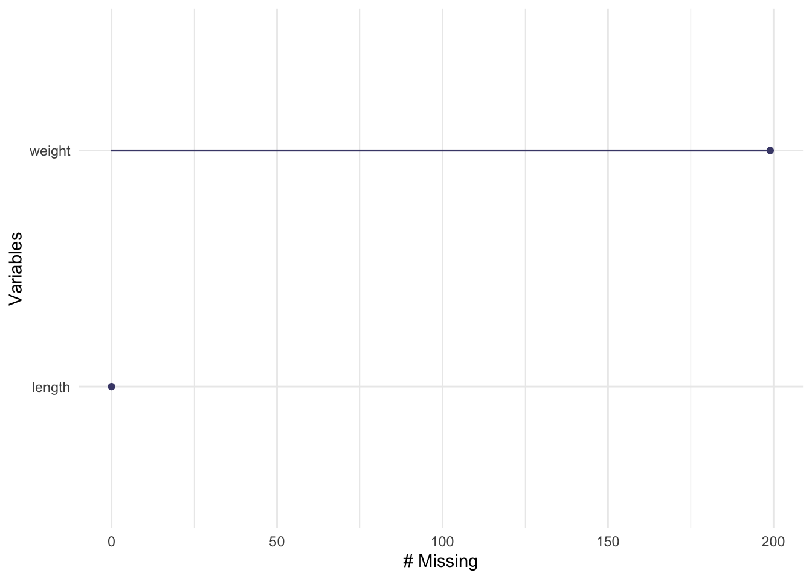
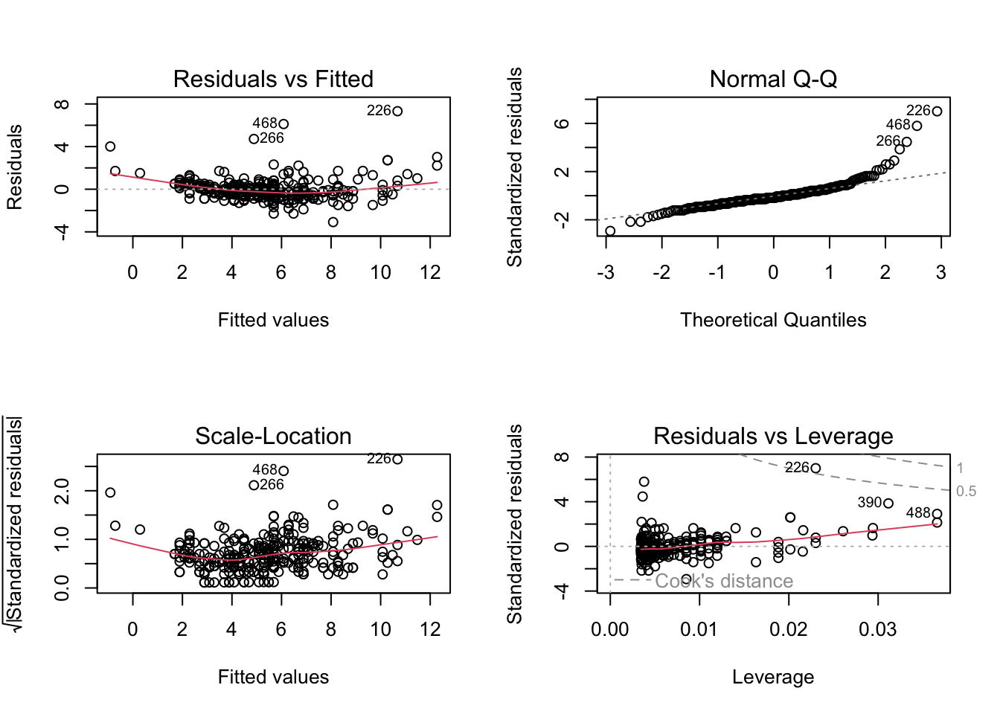
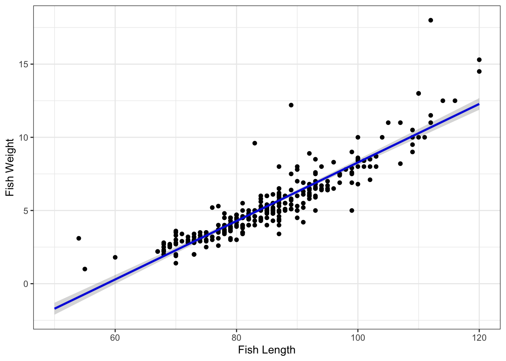

#load in packages
library(tidyverse)
library(here)
library(lterdatasampler)
library(naniar)
library(performance)
library(broom)
library(flextable)
library(ggeffects)
library(car)code for ENVS193DS HW4
#Question: How does fish length predict fish weight for trout perch (across all sample years)?
#read in the data
fishdata <- read_csv(here::here("data", "ntl6_v12.csv"))#Problem 1 1. Null and alternative hypotheses in mathematical and biological terms
Mathematical: HO: β = 0; HA: β ≠ 0
Biological: The null hypothesis will be “fish length does not predict fish weight for trout perch”; meanwhile, the alternative hypothesis will be “fish length does predict fish weight for trout perch”
- Create a visualization of the missing data for the filtered data set containing the observations you will use and also write an accompanying caption explaining how/if the missing data is relevant to your hypotheses.
#create a subset of the data to only include length and weight
fish_summary <- fishdata %>%
filter(spname == "TROUTPERCH") %>%
select(length, weight)#visualize the missing data
gg_miss_var(fish_summary)
The missing data shown from the gg_miss_var plot highlights a substantial amount of missing data for fish weight. This will be important to note because our statistical question is asking if fish length predicts fish weight; however, if a lot of data is missing for fish weight then it will likely be difficult to accurately determine a relationship between fish length and fish weight.
- Run your test (Linear regression test)
#perform a linear regression test
fishlinearregression <- lm(weight~length, data= fish_summary)
# makes the viewer pane show a 2x2 grid of plots
# format: par(mfrow = c(number of rows, number of columns))
#display the diagnostic tests
par(mfrow = c(2, 2))
plot(fishlinearregression)
check_normality(fishlinearregression)Warning: Non-normality of residuals detected (p < .001).check_heteroscedasticity(fishlinearregression)Warning: Heteroscedasticity (non-constant error variance) detected (p < .001).plot 1–Residual vs Fitted: The residual vs fitted plot generated from “fishlinearregression” shows residuals that are relatively evenly and randomly distributed around the horizontal dotted line but not entirely even and random because most residuals are clumped in the center with a few outliers. Therefore, the assumption of homoscedasticity is violated.
plot 2–Normal QQ: The normal QQ plot shows residuals that are not entirely linearly distributed, meaning the all of the points in total do not constitute a straight line. There is a portion distributed between quantiles -2 to 2 that follow a very linear line but after quantile 2 and before quantile -2 the slope positively increases.
plot 3–Scale-Location: The scale-location plot highlights that the square root of residuals does not highlight an even and random spread around the red line–points are clumped in the middle with outliers. This means that the variances change and homoscedasticity is violated.
plot 4–Residual vs Leverage: The residual vs leverage plot highlights some outliers (labeled) both inside and outside of the dashed lines indicating that there are data points that are influencing the model. This means that if the model was calculated without these labeled outliers, then the model would predict a different estimate.
#create a summary of the linear regression stats
model_summary <- summary(fishlinearregression)
model_summary
Call:
lm(formula = weight ~ length, data = fish_summary)
Residuals:
Min 1Q Median 3Q Max
-3.0828 -0.4862 -0.1830 0.4128 7.3191
Coefficients:
Estimate Std. Error t value Pr(>|t|)
(Intercept) -11.702476 0.481564 -24.30 <2e-16 ***
length 0.199852 0.005584 35.79 <2e-16 ***
---
Signif. codes: 0 '***' 0.001 '**' 0.01 '*' 0.05 '.' 0.1 ' ' 1
Residual standard error: 1.057 on 288 degrees of freedom
(199 observations deleted due to missingness)
Multiple R-squared: 0.8164, Adjusted R-squared: 0.8158
F-statistic: 1281 on 1 and 288 DF, p-value: < 2.2e-16#perform an ANOVA test
model_squares <- anova(fishlinearregression)
model_squaresAnalysis of Variance Table
Response: weight
Df Sum Sq Mean Sq F value Pr(>F)
length 1 1432.29 1432.29 1280.8 < 2.2e-16 ***
Residuals 288 322.05 1.12
---
Signif. codes: 0 '***' 0.001 '**' 0.01 '*' 0.05 '.' 0.1 ' ' 1#clean up the ANOVA summary table
model_squares_table <- tidy(model_squares) %>%
mutate(across(sumsq:meansq,~round(.x, digits = 5))) %>%
mutate(statistic = round(statistic, digits = 1)) %>%
mutate(p.value = case_when(p.value < 0.001~"<0.001")) %>%
mutate(term = case_when(term == "stem_length" ~ "Stem length (mm)",
TRUE ~ term
)) %>%
# make the data frame a flextable object
flextable() %>%
# change the header labels to be meaningful
set_header_labels(df = "Degrees of Freedom",
sumsq = "Sum of squares",
meansq = "Mean squares",
statistic = "F-statistic",
p.value = "p-value")
model_squares_tableterm | Degrees of Freedom | Sum of squares | Mean squares | F-statistic | p-value |
|---|---|---|---|---|---|
length | 1 | 1,432.2877 | 1,432.28769 | 1,280.8 | <0.001 |
Residuals | 288 | 322.0525 | 1.11824 |
- In 1-2 sentences, describe how the ANOVA table relates to the information you get from the summary() object.
The ANOVA table relates to the information you get from the summary object because both report the f-statistic, the degrees of freedom, and the p-value.
- In 2-3 sentences, summarize your results in prose with in-text references to test results. Include all relevant information.
Given that we hypothesized that fish length would predict fish weights, our null hypothesis was that fish length did not predict fish weight. However, our statistical results show that fish weight was significantly predicted by differing fish lengths (analysis of variance, F(1, 288) = 1,280.8, p < 0.001,𝞪= 0.05).
- Create a visualization with model predictions and confidence intervals on top of the underlying data. Finalize your plot.
- Write an accompanying caption
# extract model predictions using ggpredict
predictions <- ggpredict(fishlinearregression, terms = "length")
predictions# Predicted values of weight
length | Predicted | 95% CI
-----------------------------------
50 | -1.71 | [-2.12, -1.30]
60 | 0.29 | [-0.02, 0.59]
65 | 1.29 | [ 1.03, 1.54]
75 | 3.29 | [ 3.12, 3.45]
85 | 5.28 | [ 5.16, 5.41]
95 | 7.28 | [ 7.12, 7.44]
105 | 9.28 | [ 9.04, 9.53]
120 | 12.28 | [11.88, 12.68]plot_predictions <- ggplot(data = fish_summary,
aes(x = length, y = weight)) +
# first plot the underlying data from fish_summary
geom_point() +
# then plot the predictions
geom_line(data = predictions,
aes(x = x, y = predicted),
color = "blue", linewidth = 1) +
# then plot the 95% confidence interval from ggpredict
geom_ribbon(data = predictions,
aes(x = x, y = predicted, ymin = conf.low, ymax = conf.high),
alpha = 0.2) +
# theme and meaningful labels
theme_bw() +
labs(x = "Fish Length",
y = "Fish Weight")
plot_predictions
- The figure above plot fish weight prediction as a function of fish length using data collected about perch trout located in the North Temperate Lakes from 1981 to present day. The data points represent the predicted fish weight given a fish length; meanwhile, the blue line indicates the overall trendline for the predicted correlation between fish length and fish weight. The grey ribbon encompassing the blue trendline line indicates the confidence interval.